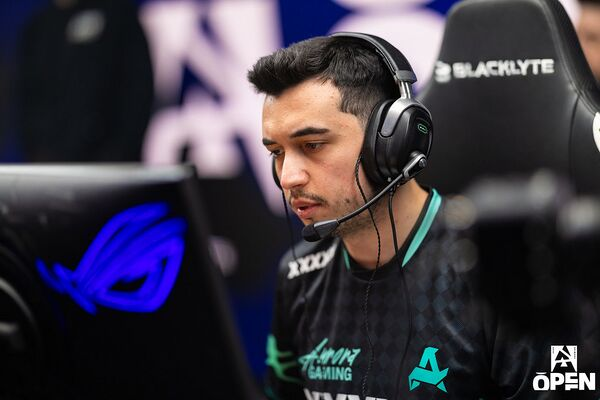

Özgür "woxic" Eker, Counter-Strike (CS:GO / CS2) arenasının en başarılı ve tanınan Türk profesyonel oyuncularından biridir. Kariyerinde dünyaca ünlü kulüplerde oynamış ve uluslararası düzeyde birçok bireysel ile takımsal başarıya imza atmıştır.